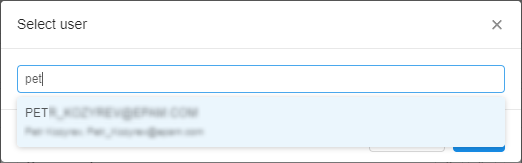
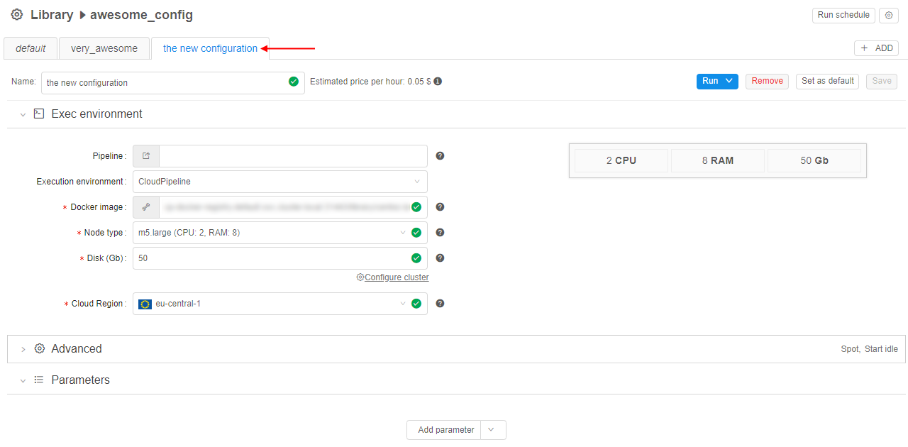

7.1. Create and customize Detached configuration
Create Detached configuration
To create Detached configuration in a Folder you need to have WRITE permission for that folder and a role CONFIGURATION_MANAGER. For more information see 13. Permissions.
Note: you can create a specific type of a run configuration which could be used only for a specific type of data. In such type of a run configuration, you can link type of data (e.g. Sample, Participant, etc) and the algorithm - a pipeline. To do that, you shall create your run configuration in a Project folder. Learn how to create a project here.
To create a Detached configuration:
- Navigate to the folder where you want to create.
- Click + Create → Configuration.
- Enter Configuration name and Configuration description in pop-up window.
- Click Create.
- The configuration will be shown in the Library.
Customize Detached configuration
To edit Detached configuration you need WRITE permissions for it. For more information see 13. Permissions.
Edit detached configuration name and description
- Navigate to the Folder where the Detached configuration is stored.
- Click icon. The "Edit configuration info" pop-up window will be open.
- Change Detached configuration name and description.
- Click Save.
Edit detached configuration permissions
- Navigate to the Detached configuration and click icon.
Note: Also you can navigate to the Folder where the Detached configuration is stored and click "Pencil" icon. - Go to Permissions tab.
- Click Add user or Add user group. In the example screenshots, we grant permissions to a user.
- Enter user's name. Auto-filling will help you.
 - A user will be added to the list. Click User's name to manage user's permissions.
- Tick appropriate permissions. For more details see 13. Permissions.
Add run configuration to detached configuration
- Select Detached configuration in the Library.
- Add new Run configuration via + ADD button.

- Enter the name, description of the new Run configuration. If the Detached configuration already has more than one Run configuration, select the template for the new one. The new configuration will be based on the template.
- Click Create.
- New Run Configuration will be represented at Detached configuration details pane.

Edit run configuration in the Detached configuration
- Select Detached configuration in the Library.
- Go to the tab with the Run configuration that you want to change.
- Change parameters of the Run configuration.
- Click Save.
Set a root entity and map configuration parameters
- If your configuration stored in a folder with a Project type, when, to set a "Root entity" field, you shall add metadata to your project. After that, you'll be able to select metadata entity type from the drop-down list.
Note: learn how to create a project here and about managing metadata here.- Click "Root entity" combo-box.
- Choose the object from default values: Participants, Samples, Pairs, Sets of Participants, Sets of Samples, Sets of Pairs.
- When you select "Root entity", you'll be able to map configuration parameters to the root entity metadata attributes. You can set it using expansion expressions.
- Click an empty parameter value field.
- Enter "this.". "this" means that value is attributed to the selected Root entity type.
- In the drop-down list select the metadata value.
Delete run configuration from the Detached configuration
- Select Detached configuration in the Library.
- Go to the tab with the Run configuration that you want to delete.
- Click Remove.

- Confirm removal.